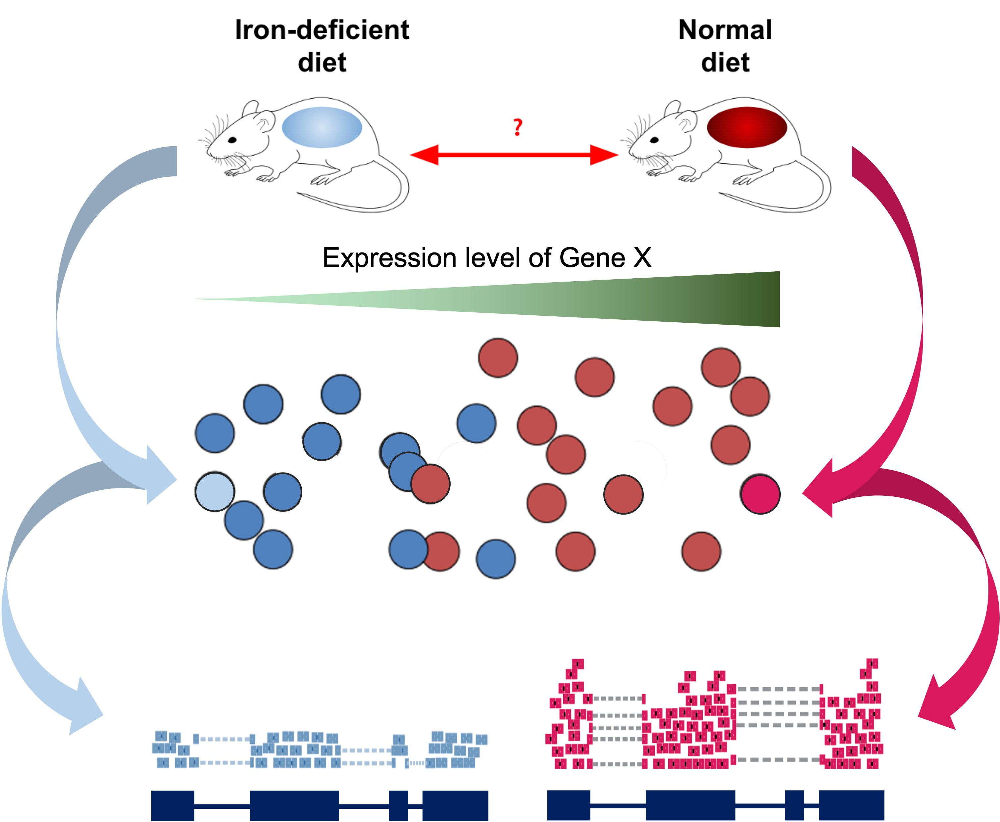

DE Initialization
UM Bioinformatics Core
2024-07-31
In this module, we will learn:
- How to ‘unblind’ our samples
- How to ensure high quality count data with filtering
Differential Expression Workflow
Here we will setup the inputs needed to initialize DESeq2 before testing for differential expression.

Sample Information
As introduced at the beginning of the workshop, we have downloaded and prepared data from an existing publication (Zhang et al., 2019), wherein one goal is to understand the gene expression differences in wild-type mice that that were “iron replete” and fed a control diet (we label these “control”) and “iron deficient” (we label these “deficient”).

Read Sample Table
Our next step will be to describe the samples within our R session, so that we make the proper comparisons with DESeq2. Let’s check the sample names from the count table.
colnames(count_table)[1] "sample_A" "sample_B" "sample_C" "sample_D" "sample_E" "sample_F"From the columns of count_table, we can see our samples
are blinded, e.g. the sample names don’t clearly correspond to treatment
groups. We will need to specify which sample IDs connect to which
experimental conditions.
Typically sample phenotype data, including experimental conditions, are stored as Excel or CSV files that we can read into R, and then use when creating a DESeq2 object. If you are unfamilar with CSV files or how to generate them, there are tutorials available to guide you through the process.
Tip: Sample naming conventions
Use only alpha-numeric characters (A-Z, a-z, 0-9), and separate parts of the name with underscores (
_) or dots (.). Do not begin sample names with numbers.
We’ll load our ‘pre-made’ sample information sheet,
samplesheet_batch.csv, to unblind our samples.
samplesheet_batch = read.table("data/samplesheet_batch.csv",
sep = ",",
header = TRUE,
row.names = 1)Alternatively, we could manually create a sample sheet, ensuring that the sample IDs match our count table.
We can look at our sample sheet information with
head().
head(samplesheet_batch) genotype condition batch
sample_A wt control Day1
sample_B wt control Day2
sample_C wt control Day2
sample_D wt deficient Day1
sample_E wt deficient Day2
sample_F wt deficient Day2Checkpoint: If you have loaded
samplesheet, please indicate with the green ‘check’ button.
Otherwise, please use the red ‘x’ button to have the command
repeated
In this example data, all mice are of a wild-type genotype with three
samples from control diet mice (labeled as “control”) and three samples
from iron deficient diet fed mice (labeled as “deficient”). Again, for
larger experiments, you may want to examine the coding of the samples
and how many group labels are present using the unique()
function and the $ operator to specify the relevant
column.
unique(samplesheet_batch$condition)[1] "control" "deficient"Replicates in RNA-seq experiments
Question In this experiment, we have samples from three mice per each condition. Do we have enough replicates?
The goal of our analysis is to separate the “interesting” biological contributions from the “uninteresting” technical or other contributions that either cannot be or were not controlled in the experimental design. The more sources of variation, such as samples coming from heterogenous tissues or experiments with incomplete knockdowns, the more replicates (>3) are recommended.

For a more in depth discussion of experimental design considerations, particularly for the number of replicates, please read A Beginner’s Guide to Analysis of RNA Sequencing Data or papers like this one by Hart et al that focus on estimating statistical power for RNA-seq experiments.
Sample table formatting
Next, we’ll format our table so that we have the appropriate data type (an ordered factor) for DESeq2 to recognize our treatment groups and appropriately compare samples.
# tidy version
samplesheet_ready <- samplesheet_batch %>%
mutate(condition = factor(condition, levels = c('control', 'deficient')),
batch = factor(batch, levels = c('Day1', 'Day2')))
unique(samplesheet_ready$condition)[1] control deficient
Levels: control deficientNotice that we set “control” as the first level as the factor for the
condition column. This ensures that the “control” (or
“reference”) group is the denominator in the default comparisons in our
DESeq2 model.
Before we proceed, we need to make sure that the sample labels (column names) in the count table match the sample information table (row names), including the order. If the sample labels don’t match, then we will see an error and need to correct the labels prior to proceeding. Checking the sample information table is extremely important to ensure that the correct samples are grouped together for comparisons.
all(colnames(count_table) == rownames(samplesheet_ready))[1] TRUEThis line of code checks if both the identity and order match between
our count_table and our samplesheet. If, in
the course of using your own data, this returns FALSE, try
using the match() function to rearrange the columns of
count_table (or the rows of samplesheet) to
get them to match.
Checkpoint: If you your sample info check
returns TRUE, please indicate with the green ‘yes’ button.
Otherwise, please use the red ‘x’ button to have the command
repeated
Creating DESeq2 object
Bioconductor software packages often define and use custom structures to store data in a way that suits biological data, such as illustrated below from Huber et al. 2015.

These custom data structures have pre-defined data slots, which hold specific types/classes of data and therefore can be more easily accessed by functions from the same package.
To create the DESeqDataSet we need two important inputs:
- A table that assigns the condition labels for each sample (that we read in and formatted)
- A raw count matrix
Is our count matrix from our RSEM outputs considered a “raw” count matrix by DESeq2?
If we think back to the RSEM outputs, the ‘expected_counts’ table may include fractional amounts due to how the alignment tool resolves reads mapping to multiple locuses). However, recent versions of DESeq2 handle this without rounding.
In addition to the count_table and the
samplesheet_ready. We will also need a design
formula to specify our model.
Making model choices
We’ll talk about the design formula more later but for now it’s important to understand that the design specifies the relevant column(s) in the metadata table and how they should be used when fitting a model for our data.
For our dataset we have one experimental condition column, which is
named condition. Although the design formula is required,
it is not used at this step.
## Create DESeq object, line by line
dds = DESeqDataSetFromMatrix(countData = count_table,
colData = samplesheet_ready,
design = ~ condition)
ddsclass: DESeqDataSet
dim: 55492 6
metadata(1): version
assays(1): counts
rownames(55492): ENSMUSG00000000001 ENSMUSG00000000003 ... mcherry
tdtomato
rowData names(0):
colnames(6): sample_A sample_B ... sample_E sample_F
colData names(3): genotype condition batchNotice that printing the dds object helpfully shows us
some helpful information:
- The dimension (number of genes by number of samples),
- The gene identifiers,
- The sample identifiers,
- The additional column names giving information about the samples
Checkpoint: If you see dds in your
environment panel, please indicate with the green ‘check’ button.
Otherwise, please use use the red ‘x’ button in your zoom reaction panel
to have this step repeated. You can use the red ‘x’ to be put in a
breakout room for help
Pre-filtering
While not necessary, pre-filtering helps to not only reduce the size of the DESeq2 object, but also gives you a sense of how many genes were reasonably measured for your samples.
Here we will filter out any genes that have less than 10 counts
across any of the samples. This is a fairly standard level of filtering,
but the data could be filtered more less or more depending on quality
control metrics from alignments and sequencing depth or total number of
samples. Since the DESeq2 object isn’t compatible with
tidyverse functions, we’ll take a different approach:
keep = rowSums(counts(dds)) >= 10
dds_filtered = dds[keep,]
dds_filteredclass: DESeqDataSet
dim: 16249 6
metadata(1): version
assays(1): counts
rownames(16249): ENSMUSG00000000001 ENSMUSG00000000028 ...
ENSMUSG00000118651 ENSMUSG00000118653
rowData names(0):
colnames(6): sample_A sample_B ... sample_E sample_F
colData names(3): genotype condition batchNotice the dds_filtered object has less elements than
the unfiltered dds object, indicating that a number of
genes were not measured in our experiment.
Checkpoint: Questions?
Summary
In this section, we:
- Loaded the necessary input files into our R session
- Discussed the importance of biological replicates
- Initialized a DESeq2 data set
- Filtered our data to remove genes that were poorly measured
Now that we’ve created our DESeq2 objects, including specifying what model is appropriate for our data, and filtered our data, we can proceed with assessing the impact of the experimental conditions on gene expression for our samples.
Sources
Training resources used to develop materials:
- HBC DGE setup: https://hbctraining.github.io/DGE_workshop/lessons/01_DGE_setup_and_overview.html
- HBC Count Normalization: https://hbctraining.github.io/DGE_workshop/lessons/02_DGE_count_normalization.html
- DESeq2 standard vignette: http://bioconductor.org/packages/devel/bioc/vignettes/DESeq2/inst/doc/DESeq2.html
- DESeq2 beginners vignette: https://bioc.ism.ac.jp/packages/2.14/bioc/vignettes/DESeq2/inst/doc/beginner.pdf
- Bioconductor RNA-seq Workflows: https://www.bioconductor.org/help/course-materials/2015/LearnBioconductorFeb2015/B02.1_RNASeq.html
- CCDL Gastric cancer training materials: https://alexslemonade.github.io/training-modules/RNA-seq/03-gastric_cancer_exploratory.nb.html
- CCDL Neuroblastoma training materials: https://alexslemonade.github.io/training-modules/RNA-seq/05-nb_cell_line_DESeq2.nb.html
These materials have been adapted and extended from materials listed above. These are open access materials distributed under the terms of the Creative Commons Attribution license (CC BY 4.0), which permits unrestricted use, distribution, and reproduction in any medium, provided the original author and source are credited.
| Previous lesson | Top of this lesson | Next lesson |
|---|